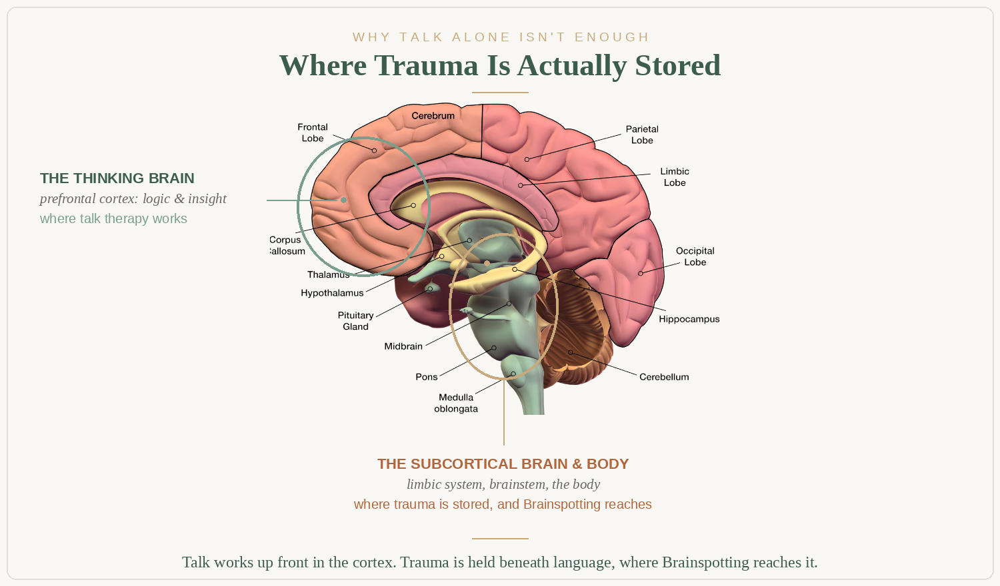

What is trauma therapy and Brainspotting?
Trauma therapy is a specialized form of counseling that helps people heal from the lasting effects of overwhelming experiences, including PTSD, childhood trauma, complex trauma, and emotional wounds that continue to shape how you feel and relate. Brainspotting is a neuroscience-based method developed by Dr. David Grand that accesses and processes trauma stored beneath conscious awareness, in the subcortical brain and body. As a trauma therapist, I offer body-based trauma therapy including Brainspotting throughout Tennessee via telehealth.
What trauma actually is
Trauma is not just what happened to you. It is what happened inside you in response, the way your nervous system adapted to survive an experience that felt overwhelming, threatening, or deeply unsafe. Those adaptations were brilliant at the time. But they often continue long after the danger has passed, shaping how you feel, how you relate, and how you move through the world.
Trauma can come from a single overwhelming event, an accident, an assault, a sudden loss. Or it can come from a lifetime of smaller ruptures, chronic emotional neglect, an unsafe childhood, years of living in a relationship that felt unpredictable or frightening. Both are real. Both deserve care.
Why isn't talk therapy always enough for trauma?
Traditional talk therapy asks you to understand your experiences through language and logic. But trauma is stored subcortically, beneath the thinking brain, in the body's nervous system, muscles, and implicit memory. You can understand your trauma perfectly and still feel hijacked by it.

This is why I integrate body-based, somatic approaches alongside talk. We work with what your body is holding, not just what your mind can articulate.
What is Brainspotting?
Brainspotting is a powerful, brain-body trauma processing approach developed by Dr. David Grand. It is based on the discovery that where you look affects how you feel, and that specific eye positions, or "brainspots," correlate with traumatic material held in the subcortical brain.
By finding and holding a relevant brainspot while accessing a traumatic memory or sensation, the brain is able to process and release what has been stuck, often going deeper and moving faster than traditional talk therapy alone. Brainspotting is particularly effective for:
- Acute trauma and PTSD
- Complex and developmental trauma
- Attachment injuries
- Somatic symptoms with no clear physical cause
- Performance anxiety and creative blocks
- Spiritual trauma and religious wounding
- Sexual trauma and childhood sexual abuse
- Grief that feels frozen, complicated, or stuck
- Shame-based patterns rooted in trauma
Trauma-informed care in every session
Whether we use Brainspotting or not, every session I offer is trauma-informed. This means I work at your pace, never pushing faster than your nervous system can tolerate. It means I understand how trauma affects the body, the relational system, and the self. And it means I bring genuine attunement and care to the parts of you that may never have felt truly safe enough to be seen.
What types of trauma can be treated?
- Acute trauma and single-incident PTSD
- Complex PTSD and developmental trauma
- Childhood emotional, physical, or sexual abuse
- Relational and attachment trauma
- Spiritual trauma and religious abuse
- Grief and traumatic loss
- Multicultural trauma and minority stress
- Missionary and cross-cultural trauma
- Sexual trauma and childhood sexual abuse
- Addiction and compulsive behavior rooted in trauma
- Complicated grief and traumatic loss
Sexual trauma
Sexual trauma requires a particularly careful, body-informed, and deeply relational approach. Many survivors have spent years minimizing what happened or carrying it entirely alone. I create an authentic, safe, attuned therapeutic space where survivors can begin to process at their own pace, in their body, their emotions, and their sense of self, without ever being pushed faster than they are ready to go.
What can I expect from trauma therapy?
We always begin with a complimentary 20-minute consultation. Trauma work requires specialized training and experience. We begin by establishing safety, stabilization, and internal resources before moving into deeper processing. This is not avoidance. The nervous system needs a foundation of safety before it can process what it has been holding.
If we use Brainspotting, a session looks like this: you focus on a specific felt charge or memory while I help you locate a visual field position that activates that material. You then observe what arises in your body while holding that gaze point. The subcortical brain begins to process and integrate what it could not access through language alone. Many clients describe it as a quiet, deep release, not dramatic, but genuinely significant.
The pace is always determined by your window of tolerance, your capacity to stay present with difficult material without becoming overwhelmed. Individual sessions are 50 minutes, conducted online via a secure, HIPAA-compliant platform throughout Tennessee.